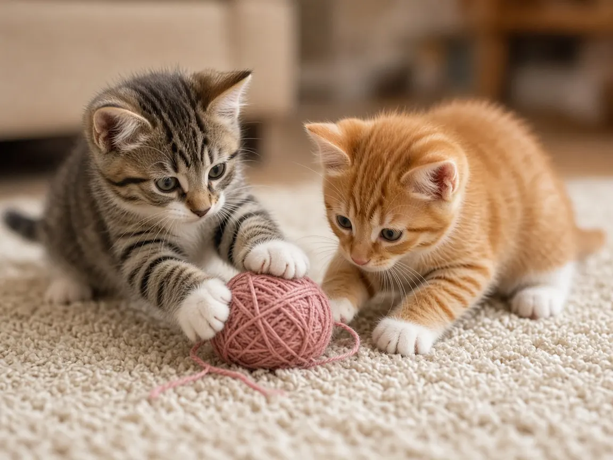

Why do cats get the zoomies?
A sudden sprint around the house is usually normal play. Owners call it the zoomies. Cats Protection calls the same burst a frenetic random activity period, or FRAP, and says an occasional one is natural, especially in younger cats and indoor cats. Veterinary scientists at the University of Adelaide add the limit that matters: there is still little research on what causes zoomies, how often they happen, or even an official definition.

What the zoomies look like
VCA Animal Hospitals describes kitten zoomies as frenzied running and pouncing, sometimes with meowing. It is more common in kittens, but VCA says older cats can still have an occasional burst, and that this is normal behavior. Susan Hazel and colleagues at the University of Adelaide, writing in The Conversation, describe running, spinning, jumping and rolling at top speed. They call FRAP a proposed name, not a diagnosis. Cats Protection places the familiar version early in the morning or in the evening.
Why a resting cat suddenly runs
There is no agreed single cause. The Conversation states that zoomies are widely discussed and poorly studied: no published count of how often pet cats do it, and no test that separates one motive from another. VCA's kitten guide still lists the explanations clinics use. A burst may be pent-up energy, too little mental stimulation, predatory instinct (the stalk, chase and pounce of play), or a cat that is simply playful. VCA's general guide adds energy stored during a long rest, often noticed toward nightfall, and a hunting urge played out on imaginary prey.
Zoomies themselves have not been measured in a trial. The hunting link still fits ordinary play. Our behavior guide explains why a wand toy and a real catch matter more than chasing hands and feet. Cats Protection says most of the enjoyment comes from catching and "killing" the toy, which they say releases endorphins. A laser pointer, or a video of mice on a screen, can frustrate a cat because there is nothing to catch.
The sprint after the litter box
VCA lists a pattern many owners know: some cats have a short bout of zoomies after the litter box. The Conversation calls the litter tray a commonly reported trigger. Hazel and colleagues suggest one possible reason, which they nickname poo-phoria: relief after a stool, possibly because a large bowel movement stimulates the vagus nerve. They present that as a possibility, not a proven mechanism, and they note a similar burst in dogs.
A relaxed sprint after a normal toilet trip fits those descriptions. It is a different picture if the cat strains, cries, visits the box over and over, or passes little or no urine. That is an emergency, especially in male cats, covered in cat straining to pee. A zoomie does not prove the bladder is fine.
Morning, evening and the middle of the night
Cats Protection says the run is usually early morning or evening. VCA links one theory to daytime rest and pent-up energy by nightfall, and notes that nighttime zoomies can wreck sleep, so play is better encouraged by day. Hazel and colleagues are more cautious: we do not yet know whether zoomies prefer certain hours, or some breeds. A burst inside ordinary play, they say, reads as excitement.
Those pictures can sit together without a fake statistic. Many house cats are busier at dawn and dusk and nap through the day, as explained in why cats sleep so much. A sprint around lights out can be that schedule plus spare energy. It is not, by itself, a sleep disorder.
When the zoomies happen every day
An occasional burst is expected. Daily zoomies are where Cats Protection changes the advice. They say a daily pattern can mean a cat is under-stimulated and frustrated. Their first fix is play spread through the day: a few sessions of about five minutes, rather than one session of about 15 minutes saved for the evening, with a mix of toys such as a wand, a light ball and a kicker. Let the cat catch the toy before it is put away.
They also suggest three or four smaller meals across the day, instead of one or two large ones, plus puzzle feeders so eating takes work. That lines up with our nutrition page. Short training with treats or gentle praise, and no punishment for a miss, is another of their ideas. An indoor cat staring at neighborhood cats through the glass may do better if the lower window is covered, so it is not stuck watching a rival it cannot chase.
The room matters too. A hiding place, a box, a shelf or a windowsill, and a clear path make a sprint less likely to end in a crash. Boxes are covered in why cats like boxes. Cats Protection also mentions cat safe plants (separate from why cats eat grass) and a plug-in pheromone diffuser. VCA adds scratching posts and vertical space. Some cats sprint after catnip, explained in why cats like catnip. If the sprints suddenly get harder or more frequent, look at health again, not only at toys.
When a sprint needs a vet
Context is the test The Conversation asks owners to use. If the cat invites you in, by batting at you or by rolling and pausing, the authors read the burst as excitement. Worry when the running goes on for a long time, especially spinning, or when the cat is confined and you cannot distract or stop it. They say those patterns can be a repetitive behavior problem, and that injuries need veterinary help. A cat that looks panicked, rather than bouncy, is not showing the playful version.
VCA draws a similar line. Occasional episodes are normal. A clear change in how often they happen, distress, or aggression during the sprint should not wait. The kitten guide names hyperthyroidism as one condition that can drive hyperactivity, and says to ask a veterinarian if activity jumps or the cat becomes aggressive in these bursts. Wider checks are in our health guide and kitten guide. Places to climb and hide are part of cat care basics. A clear floor and nothing hot or sharp on the racing line matter more than stopping a ten second dash.
Cat zoomies FAQ
Are cat zoomies normal?
An occasional sprint is normal, and it is more common in kittens, younger cats and indoor cats. Daily zoomies can mean the cat needs more play and mental work.
What does FRAP mean?
Frenetic random activity period. Cats Protection uses that name for the zoomies. University of Adelaide authors call it a proposed name and note that there is no official definition yet.
Why does my cat run after the litter box?
VCA notes that some cats do this. A vagus nerve explanation has been suggested, but it is not proven. Straining, or passing little urine, is a separate emergency.
Do I need to stop the zoomies?
A short playful burst in a safe room does not need to be stopped. Daytime play, a toy the cat can catch, and a clear running path help more than scolding.
Can zoomies be a sign of illness?
Call a vet if the sprints suddenly increase, include aggression, go on for a long time, cause injury, or you cannot interrupt them. Hyperthyroidism is one condition vets may check.
Sources
- Why do cats get the zoomies?, Cats Protection (accessed 18 Nov 2026)
- Understanding Kitten Zoomies, VCA Animal Hospitals (accessed 18 Nov 2026)
- Cat zoomies: Understanding these crazy bursts of energy, VCA Animal Hospitals (accessed 18 Nov 2026)
- Hazel, Goncalves Costa and Henning, Why do cats and dogs get the zoomies?, The Conversation (25 Jan 2023)
Cite this page
Students and teachers are welcome to cite this page. Add your access date if your teacher or style guide asks for one.
APA (7th ed.)
MeowWise. (2026, November 18). Why do cats get the zoomies? https://meowwise.com/blog/why-do-cats-get-the-zoomies.html
MLA (9th ed.)
“Why do cats get the zoomies?” MeowWise, 18 Nov. 2026, meowwise.com/blog/why-do-cats-get-the-zoomies.html.
Chicago (bibliography)
MeowWise. “Why do cats get the zoomies?” Last modified November 18, 2026. https://meowwise.com/blog/why-do-cats-get-the-zoomies.html.
General education, not veterinary advice. If you are worried about your cat, contact your veterinarian; in an emergency, go to the nearest emergency vet.